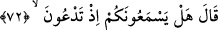
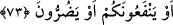
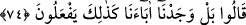
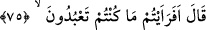

72. İbrahim dedi ki: Peki, yalvardığınızda onlar sizi işitiyorlar mı?
Bu cümle, açıklama için olan başlangıç cümlesidir. “İbrahim dedi ki: Peki,
yalvardığınızda” ihtiyaçlarınızı istemek için duâ ettiğiniz vakit “onlar sizi işitiyorlar”
ve size icâbet ediyorlar “mı?” yâni duânızı/yalvarmanızı işitiyorlar mı? demektir.
Putlardan akıllı varlıklar gibi bahsedilmesi, onların putları akıllı varlıklar yerine
koymalarından dolayıdır.
73. Yahut size fayda ya da zarar verebiliyorlar mı?
“Yahut” onlara ibâdetiniz karşılığında “size fayda ya da” ibadeti terk etmeniz
sebebiyle “zarar verebiliyorlar mı?” ulaştırabiliyorlar mı? Çünkü ibâdet ya bir
menfaati celbeder ya da bir zararı def eder.
İbrahim’in kavmi ona cevap veremediler; taklîd (baba ve ecdadımızdan böyle gördük)
bahanesini ileri sürdüler.
74. Şöyle cevap verdiler: Hayır, ama biz babalarımızı böyle yapar bulduk.
“Şöyle cevap verdiler: Hayır,” Biz o putlarımızdan duâları duyduklarını, fayda ve
zarar verdiklerini görmedik. “ama biz babalarımızı böyle yapar bulduk.” Yâni onları
bizim ibâdet ettiğimiz gibi ibâdet eder bulduk. Biz de onlara uyduk.
Böylece onlar, o putların duymaktan, fayda ve zarar sağlamaktan tamamen uzak
olduklarını îtiraf ettiler. Taklîdden başka bir dayanaklarının olmadığını açıklamaya
mecbur kaldılar.
Tahkîk Kâbesine doğru gitmek istersen
Yolunu kaybetmiş taklidçilerin peşinden gitme
75. İbrahim dedi ki: İyi ama, neye taptığınızı (biraz olsun) düşündünüz mü?
“İbrahim” kendisini putlardan berî kılarak “dedi ki: İyi ama, neye taptığınızı (biraz
olsun) düşündünüz mü?” yani baktınız ve gördünüz mü veya düşündünüz ve bildiniz
mi?